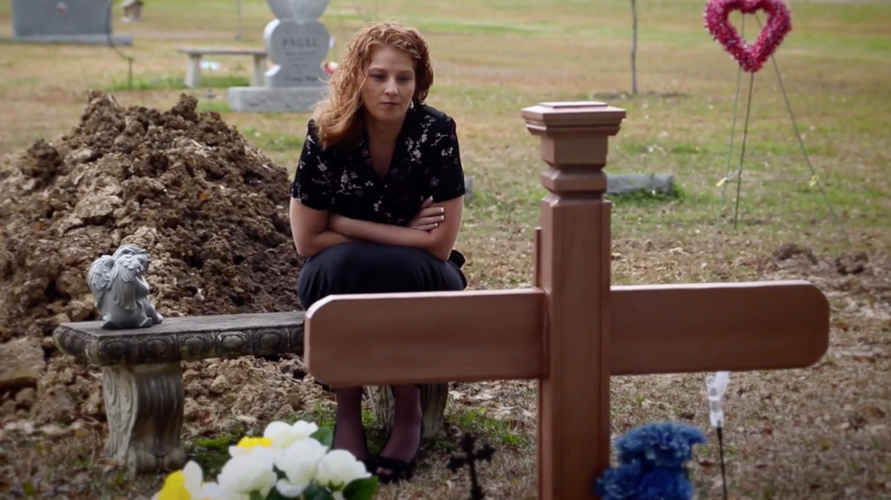
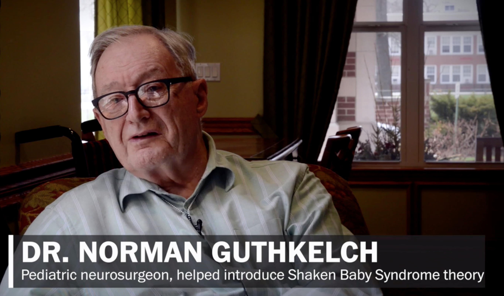
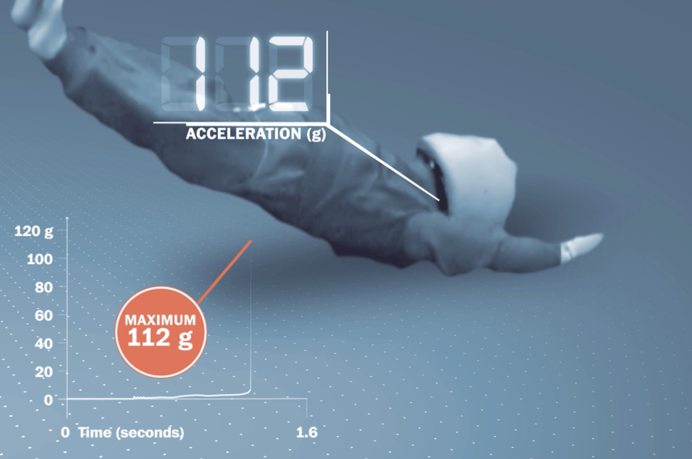

Le Washington Post a publié en mars 2015 un dossier très complet sur la controverse autour du syndrome du bébé secoué. Il pointe notamment les conséquences importantes pour les familles des erreurs diagnostiques.
Une référence en journalisme d'investigation
Le Washington Post est une référence en terme de journalisme d'investigation dans la presse écrite. Ce sont deux journalistes du Washington Post qui ont été à l'origine des révélations ayant abouti au scandale du Watergate en 1972. Ce scandale avait mené à la démission du président américain Richard Nixon.
Nous proposons ici un résumé des principaux points abordés dans ce dossier.
Évolutions et controverses
Les reporters ont, pendant un an, analysé les données de presse et des tribunaux sur les affaires de bébés secoués depuis 2001. Cette enquête a mis au jour 1800 affaires résolues aux Etats-Unis. Une condamnation a été prononcée dans 1600 cas, ce qui représente un taux plus élevé que pour les autres types d'affaires criminelles impliquant des violences. L'article relevait, entre 2001 et 2015, 16 condamnations annulées, dont trois dans l'année précédente. À propos par exemple d'un jugement en révision, l'article relate :
Dans l'Illinois, un juge fédéral qui a récemment libéré une mère de deux enfants après près d'une décennie d'emprisonnement a estimé que le syndrome du bébé secoué constituait « plus un article de foi qu'une démonstration scientifique ».
Le diagnostic a fait l'objet de retournement d'experts :
Dans quatre des cas, les médecins qui avaient diagnostiqué un secouement sont ensuite revenus sur leurs opinions, affirmant qu'ils n'étaient pas certains du moment ou de la cause des blessures. Une des révisions a permis de libérer un père de Sacramento après trois ans et demi de prison. [...]
Le médecin légiste George Nichols fait partie des médecins qui ont diagnostiqué le syndrome du bébé secoué et qui n'y croient plus.
« Les médecins, y compris moi-même, ont considéré comme prouvée une théorie qui ne l'était pas, sur une cause potentielle de lésions cérébrales chez les enfants. » C'est ce qu'a déclaré Nichols, qui fut médecin légiste en chef du Kentucky pendant 20 ans, avant de prendre sa retraite en 1997. « Ma plus grande inquiétude est d'avoir privé quelqu'un de justice parce que j'ai été ouvertement partial ou que je me suis simplement trompé. »
Pour un ancien médecin légiste :
« Il est intuitivement évident que secouer violemment un bébé est dangereux et doit être évité à tout prix. Mais, dans mon expérience, il y a beaucoup de médecins qui invoquent le diagnostic de bébé secoué trop facilement. Et lorsqu'ils le font, c'est souvent en disant que les lésions constatées ne peuvent provenir que d'un secouement. Il y a des jeunes nourrissons qui peuvent présenter ces lésions, surtout les hématomes sous-duraux, en raison d'autres causes que des traumatismes. »
A l'inverse, l'article se fait l'écho des certitudes des procureurs et des médecins légistes convaincus de la démarche diagnostique qu'ils estiment validées par des années de recherche, et par l'existence d'aveux produits par des parents ou nounous. Les médecins légistes disent ne pas se baser uniquement sur les lésions intracrâniennes et sur les hémorragies rétiniennes pour établir leur diagnostic. Ils prétendent également tenir compte notamment des traces extérieures visibles de violences. Notons au passage qu'en France, cette dernière constatation n'est pas nécessaire pour poser un diagnostic « certain » de maltraitance.
La controverse traduite dans des prises de positions officielles
L'article revient également sur l'abandon par l'Académie Américaine de Pédiatrie de la dénomination du « syndrome du bébé secoué ». Ce simple fait est révélateur de l'ampleur des inconnues :
Alors que les questions sur le diagnostic émergeaient, l'Académie Américaine de Pédiatrie a recommandé aux médecins de cesser d'utiliser le terme de « syndrome du bébé secoué », notant que « les mécanismes complets de toutes les blessures par maltraitance restent mal compris ». En 2009, l'Académie a suggéré le terme, maintenant largement utilisé, de « traumatisme crânien infligé » qui comprend les secousses, les impacts infligés, ou une combinaison des deux.
Par ailleurs des retournements spectaculaires lors d'affaires judiciaires américaines sont relatées :
En décembre, un juge de New-York a annulé la condamnation pour meurtre d'une nourrice âgée de 55 ans qui avait passé plus de dix ans en prison, déclarant que les preuves qui pesaient contre elle étaient « manifestement fausses ou font maintenant l'objet d'un nouveau débat ».
Deux semaines plus tard, un juge du Texas a recommandé un nouveau procès pour un homme condamné à 35 ans de prison en 2000 pour avoir blessé la fille de sa petite amie. Le procureur de district et l'avocat de la défense avaient soumis conjointement à la cour une requête indiquant que « les données scientifiques à la base de la condamnation sont désormais connues comme étant mal fondées ».
Au moment de la publication de l'article, plus d'une centaine de dossiers de bébés secoués étaient suivis par des Innocence Projects, associations à but non lucratif visant à faire reconnaître l'innocence de personnes accusées ou condamnées à tort.
Des erreurs judiciaires tragiques
L'article présente ensuite un certain nombre d'erreurs tragiques avec des condamnations lourdes ensuite annulées.
Brandy Briggs a perdu tragiquement son enfant de 2 mois en 1999. Il était décédé à l'hôpital, sept jours après un arrêt respiratoire au cours d'une sieste matinale à son domicile. En 2000, Brandy Briggs avait dû plaider coupable pour réduire sa peine, et elle avait été condamnée à 17 ans de prison. En 2004, un nouvel expert a alors découvert qu'une erreur s'était produite à l'hôpital. Le nourrisson avait été mal intubé (dans l'œsophage) ce qui l'avait privé d'oxygène pendant vingt minutes. La cause de la mort est donc passée d'homicide à inconnue. Après cinq ans de prison, Brandy Briggs a été libérée et innocentée.

En 1998, suite au décès de sa fille, David Long était poursuivi pour meurtre au premier degré. Alors que l'enfant prématuré de 3 mois pesait moins d'un kilogramme à la naissance et avait eu des problèmes de santé, un premier expert avait conclu à des blessures traumatiques à la tête et au cou, par secouement, estimant qu'il n'y avait pas d'autre explication possible. Trois ans plus tard, quatre docteurs ont finalement reconnu qu'il n'y avait pas de preuve suffisante pour diagnostiquer un traumatisme, estimant que le décès avait été causé par une pneumonie aggravée par la grande prématurité de l'enfant. Les charges contre David Long ont été abandonnées.
En 2002, un père qui purgeait une peine de 10 ans de prison a été libéré après l'intervention d'un nouvel expert dans l'affaire qui le visait. Le premier expert avait rejeté l'explication des parents de l'enfant selon laquelle il était tombé de leur lit. Il s'était appuyé sur la présence de contusions et de saignements dans le cerveau.
En 2006, un père a également été innocenté après deux années de poursuites pour avoir secoué et tué son enfant, une première expertise ayant conclu à une cause traumatique pour la mort. Un nouvel expert a découvert que l'enfant de 10 semaines était probablement décédé à cause de complications de multiples accidents vasculaires cérébraux survenus au cours de la grossesse.
Enfin, l'article décrit plus longuement le cas tragique de Gail Dobson. Cette nounou reconnue et respectée de tous a été accusée d'avoir secoué un enfant dont elle avait la garde. Elle a été condamnée à 20 ans de prison avant d'être reconnue innocente en 2015 à l'issue d'un nouveau procès, après avoir purgé 4 ans de prison. Là, de nouvelles expertises ont révélé une évolution anormale du périmètre crânien avant que la nounou ne prenne en charge l'enfant. Des conditions pathologiques sous-jacentes, inconnues jusqu'alors pouvaient expliquer le malaise de l'enfant chez sa nounou.
Des médecins qui changent d'avis
L'article donne la parole à un médecin légiste, révélateur d'une évolution qui prend de l'ampleur. Après avoir passé près de 30 ans à étudier des morts violentes et à n'avoir aucun doute sur la validité du diagnostic du syndrome du bébé secoué, il témoigne désormais pour la défense et déclare :
« Beaucoup de personnes dans ce domaine, en particulier de nombreux pédiatres, font des déclarations absolues et dogmatiques sans reconnaître les exceptions qui sont pourtant bien connues. [...] Peut-on se rendre responsable d'une condamnation injustifiée d'une personne, simplement à cause de cette approche dogmatique où l'on ne voit qu'un traumatisme, un bébé secoué, et rien d'autre ? »
Le journal fait donc le point sur l'évolution de la controverse, en 2015 (qui s'est d'ailleurs intensifiée depuis) :
Le Washington Post a relaté les histoires de neuf de ces médecins par le biais d’interviews, de documents et de transcriptions d’essais.
La question n'est pas de savoir si les secousses violentes peuvent blesser des bébés : même les médecins qui contestent le diagnostic affirment que les secousses peuvent endommager le cou, le torse ou la colonne vertébrale fragile d'un nourrisson. Mais les médecins disent qu'il n'est pas prouvé que les secousses puissent produire les lésions habituellement attribuées au syndrome du bébé secoué, à savoir des saignements à la surface du cerveau, des saignements à l'arrière des yeux et un œdème cérébral.
Des médecins et des scientifiques du monde entier ont initié les questionnements, notamment un neuropathologiste légiste dans l’Illinois, un ophtalmologiste dans le Colorado, un radiologue en Pennsylvanie, un physicien en Idaho, un pathologiste légiste en Caroline du Nord, un neurochirurgien à Washington, et plusieurs médecins en Grande-Bretagne, Suède, Hong Kong, et en Argentine.
Bien qu'ils soient surpassés en nombre par les médecins qui soutiennent le diagnostic officiel, ceux qui le contestent gagnent en force.
Norman Guthkelch, pionnier du syndrome du bébé secoué, a changé d'avis
Le Washington Post présente le rôle joué par Norman Guthkelch :
Le neurochirurgien pédiatrique Norman Guthkelch a joué un rôle clé dans l'hypothèse initiale qui a conduit au syndrome du bébé secoué. Maintenant, il dit que cette science est invalide et qu'il devrait y avoir un examen indépendant des condamnations pour bébé secoué.
Norman Guthkelch est crédité pour avoir le premier formulé l'hypothèse d'une rupture des veines ponts en cas de secouement, conduisant à des hématomes sous-duraux, dans une courte publication de deux pages en mai 1971. Son hypothèse a été reprise ensuite par John Caffey, donnant naissance au syndrome du bébé secoué. À la fin de sa vie, Norman Guthkelch est devenu très critique de l'utilisation qui a ensuite été faite de cette hypothèse :
« Je fais ce que je peux, et ce, jusqu'à mon dernier souffle, pour corriger une situation extrêmement injuste », a déclaré Guthkelch, qui vit maintenant dans l'Ohio et approche des 100 ans. « Je pense qu'ils sont allés beaucoup trop loin. »

L'article revient également sur les évolutions et l'historique de la controverse :
En 1987, une équipe de médecins et d'ingénieurs de l'Université de Pennsylvanie a rapporté dans le Journal of Neurosurgery avoir examiné les cas de 57 enfants soupçonnés d'avoir été blessés par secouement, dont 13 mortels. Dans tous les cas mortels, les symptômes étaient accompagnés de signes de traumatisme contondant à la tête.
Bien que les chercheurs aient reconnu que leur étude était limitée par un manque d'informations sur les caractéristiques biomécaniques du cerveau du nourrisson, ils ont conclu : « Le syndrome du bébé secouant, du moins dans sa forme aiguë la plus grave, n'est généralement pas causé uniquement par des secouements. »
Le procès très médiatisé de Louise Woodward en octobre 1997, aux États-Unis a attiré l'attention du grand-public. Le docteur Patrick Barnes, radiologue spécialisé en neurologie pédiatrique, se situait alors au coté de l'accusation. Depuis, ce professeur de l'université de médecine de Stanford a changé d'avis et il témoigne dans des procès pour la défense.
Les hémorragies rétiniennes n'ont pas non plus échappé aux remises en cause, comme en témoigne aussi cet autre extrait :
Mais en 2001, Patrick Lantz, médecin légiste en Caroline du Nord, a commencé à s'intéresser de plus près aux conditions pouvant provoquer un saignement. Lantz, un médecin légiste qui soutenait auparavant le diagnostic académique de bébé secoué, a examiné les yeux de plus de 180 enfants décédés, dont 116 nourrissons. Il a découvert des hémorragies rétiniennes chez des bébés décédés des suites d'une obstruction des voies respiratoires, d'une cardiopathie congénitale et d'infections telles que l'encéphalite et la méningite.
« Si les médecins voient des hémorragies rétiniennes, ils disent que c’est un cas de violences », a déclaré Lantz, qui a publié quatre études sur le sujet. « Mais c’est une méthode aussi scientifique que celle d'une diseuse de bonne aventure qui lirait dans le marc de café. »
Des tests biomécaniques montrant la dangerosité des chutes
Nous traduisons ici un extrait documenté sur des tests physiques mandatés par le Washington Post :
Alors que les médecins contestaient les conditions liées aux secouement, les ingénieurs en biomécanique ont commencé à se demander si des chutes accidentelles de canapés, lits, tables à langer et installations de terrains de jeux pouvaient provoquer les mêmes blessures mortelles. Les résultats ont soulevé encore plus de questions sur la science derrière le diagnostic.
Les ingénieurs travaillant avec des mannequins d’essais pour crash-tests ont découvert que les « chutes » produisaient des d’accélérations à la tête bien supérieures à celles d'un secouement. Le Washington Post a mandaté son propre test à la fin de l’année dernière dans un laboratoire d’ingénierie situé à proximité de Detroit. L’étude a été menée par l’ingénieur en biomécanique Chris Van Ee, spécialiste en analyse des accidents, qui travaille par ailleurs comme expert de la défense dans des affaires de violences.
Lors des tests, un homme d'environ 100 kg a vigoureusement secoué un mannequin d'essai de 11 kg. Le mannequin est également tombé d'un canapé.
Les secouements ont généré un pic entre 6 et 8 G, c'est à dire huit fois l’accélération due à la gravité, soit deux fois plus que celle produite lors d’un saut d'obstacles, contre un pic de 112 G lorsqu'il y avait un impact direct sur la tête lors d'une chute.

Une bataille statistique sur les chutes
La controverse sur les chutes se joue aussi sur le terrain statistique. L'article évoque en effet les études de Chadwick (utilisées par les partisans du syndrome du bébé secoué) et celles de Plunkett (qui à l'inverse vont à l'encontre de la vue dominante) :
Les médecins qui soutiennent le diagnostic du syndrome du bébé secoué critiquent les tests, affirmant que les mannequins ne sont pas des bébés et que les résultats apportent peu au débat. Ils évoquent un article publié en 2008 par le pédiatre californien David Chadwick et d'autres, qui suivaient des recherches et des cas de chutes mortelles, et concluaient que « ces décès sont rares » : moins d'un sur un million. Les médecins ont également déclaré que le type de blessures résultant de chutes était souvent différent de celui des secouements, avec des saignements dans différentes parties du cerveau.
Les médecins qui ont contesté le diagnostic du syndrome du bébé secoué soulignent qu’une étude de 2001 utilisant les données de la Commission américaine de sécurité des produits de consommation a mis en évidence les cas de 18 enfants, âgés de 1 à 13 ans, décédés après une chute d’équipement de terrain de jeux. La plupart avaient un œdème au cerveau et des saignements à la surface du cerveau. Sur les six enfants dont les yeux ont été examinés, quatre avaient une hémorragie rétinienne étendue. Ces recherches ont été réalisées par le médecin légiste John Plunkett. Légiste en exercice de longue date du Minnesota, il avait auparavant soutenu le diagnostic classique du syndrome de bébé secoué jusqu'à la fin des années 1990 avant de changer d'avis.
« Je pensais que le secouement était un diagnostic viable et légitime », a-t-il déclaré. « C’est ce qui m'avait été enseigné, mais je n’étais pas assez formé et prêt pour comprendre les mécanismes de blessure. C’est alors que j’ai commencé à apprendre la science. »
« Pourquoi s'obstiner dans l'erreur ? »
Cet article se termine sur une question majeure, celle de la difficulté à reconnaître leurs erreurs pour des experts qui ont passé leur vie et construit leur réputation à soutenir une théorie. Certains ont franchi le pas, mais beaucoup se refusent encore à prendre de la hauteur, du recul sur leurs pratiques en les soumettant à un esprit critique.
C'est l'un de ces médecins ayant changé de point de vue qui livre cette question. Initialement formé dans les années 1980 dans le cadre du paradigme dominant du syndrome du bébé secoué, plusieurs travaux l'ont amené à s'interroger puis à remettre en cause ce qu'il croyait acquis : les travaux de Patrick Lantz sur les hémorragies rétiniennes ayant des causes naturelles, et ceux de Plunkett sur les saignements intracrâniens survenus à l'issue de chutes depuis des aires de jeu.
« Ma façon de penser a définitivement évolué avec le temps », a déclaré Arden. « Je n’ai pas rejoint le camp de ceux qui prétendent qu'on ne peut jamais parler de « bébé secoué », mais je suis beaucoup plus prudent et circonspect dès lors qu'il s'agit de l’invoquer. Pourquoi s'obstiner dans l'erreur ? »
Sources :